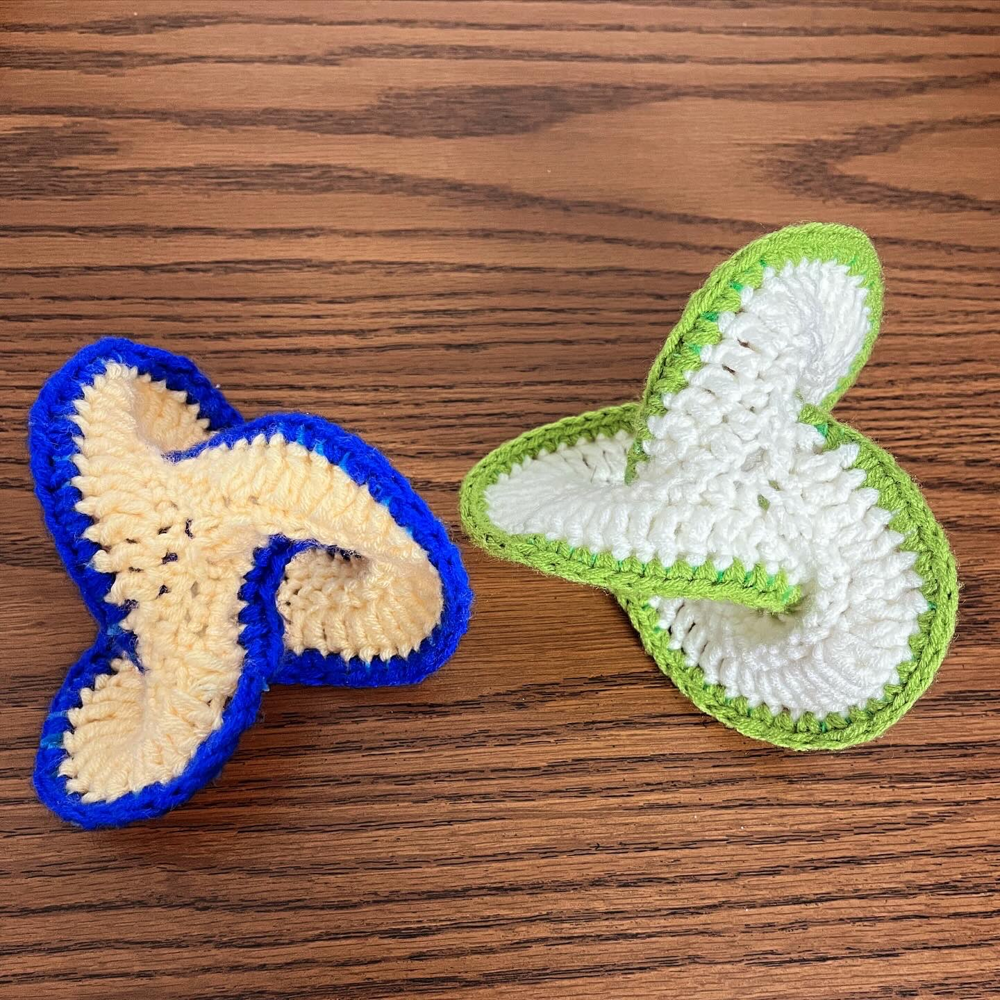
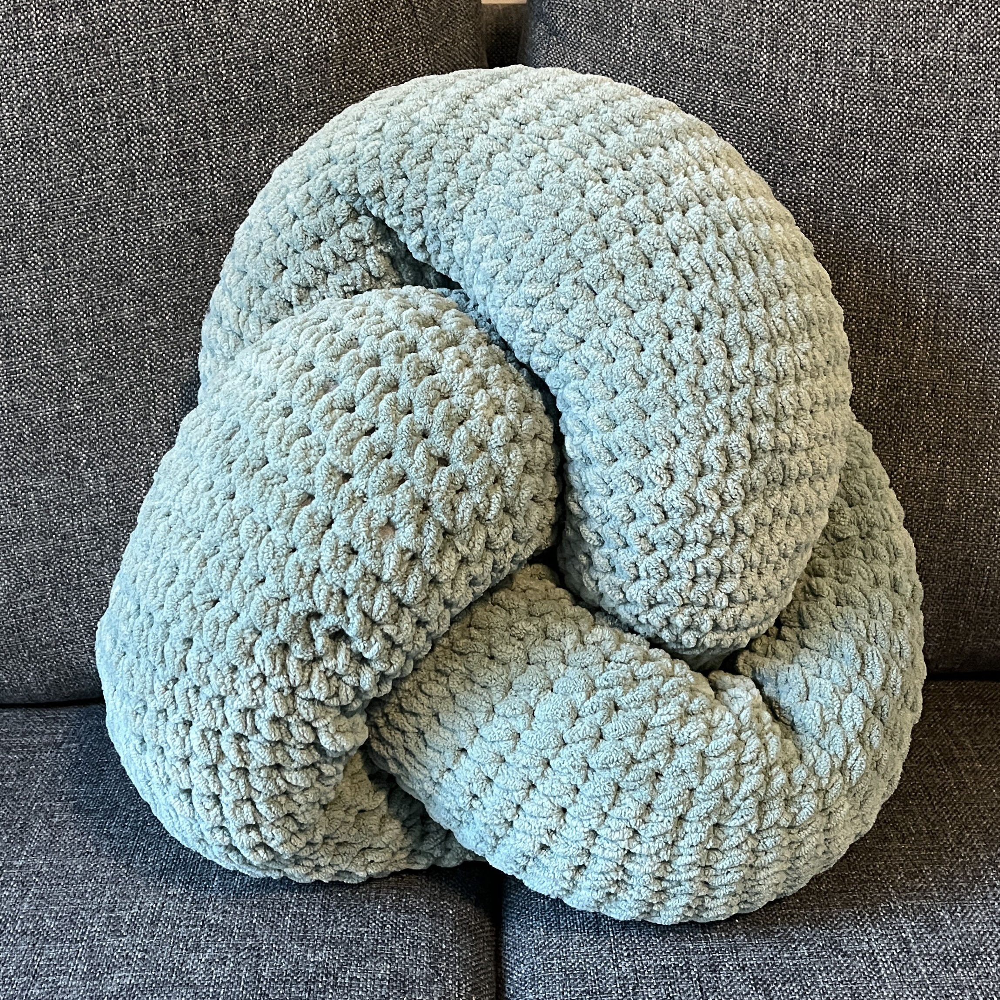
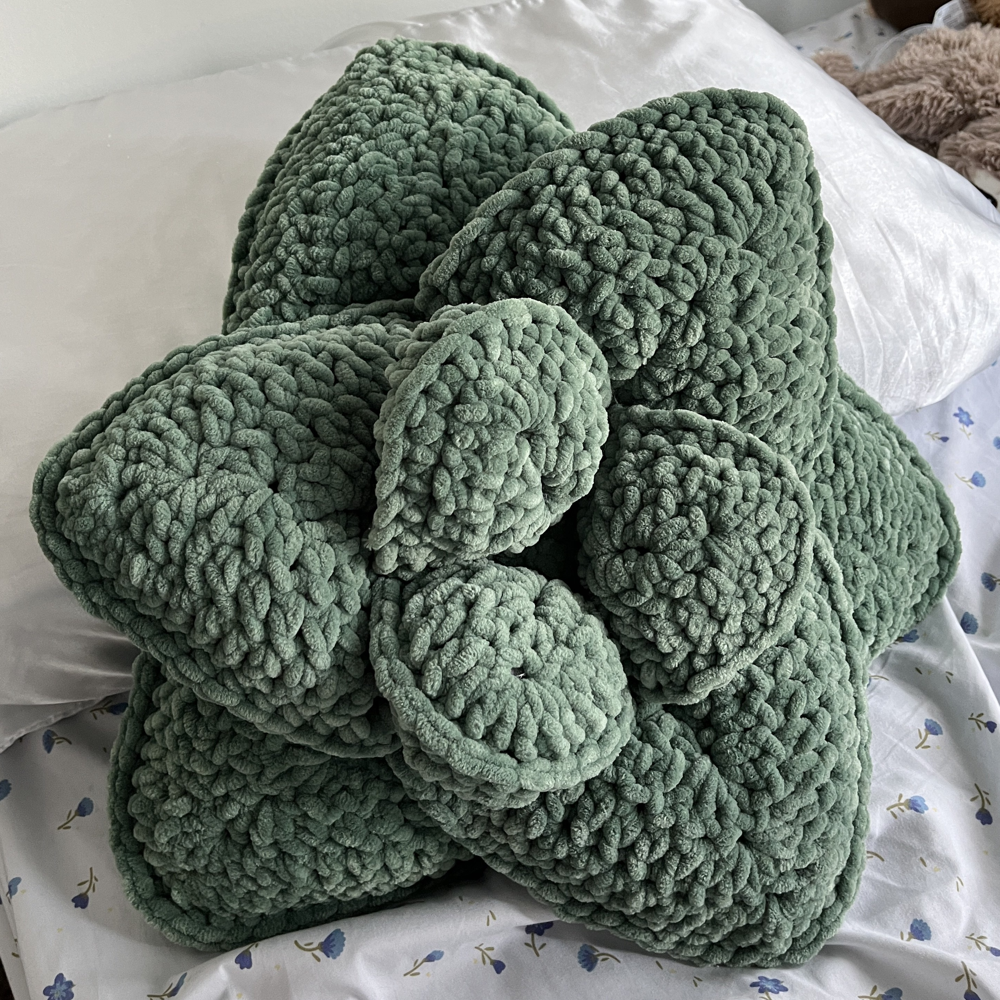
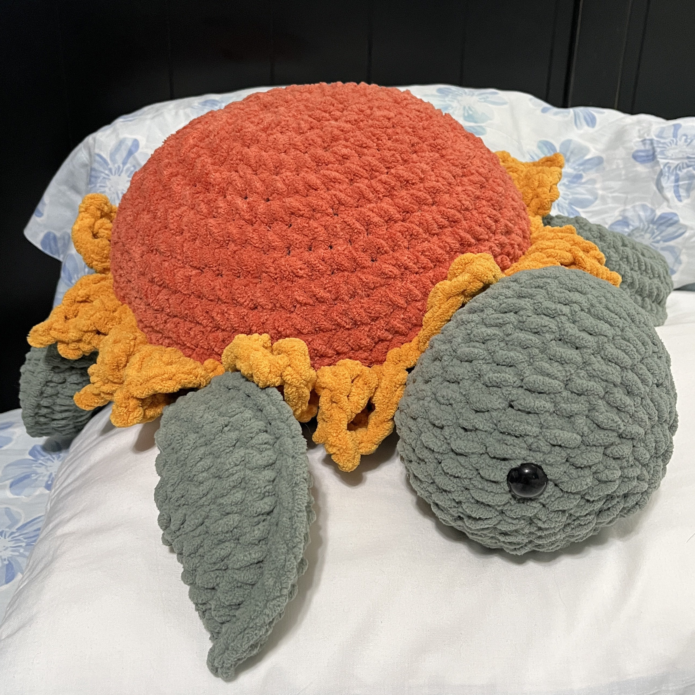
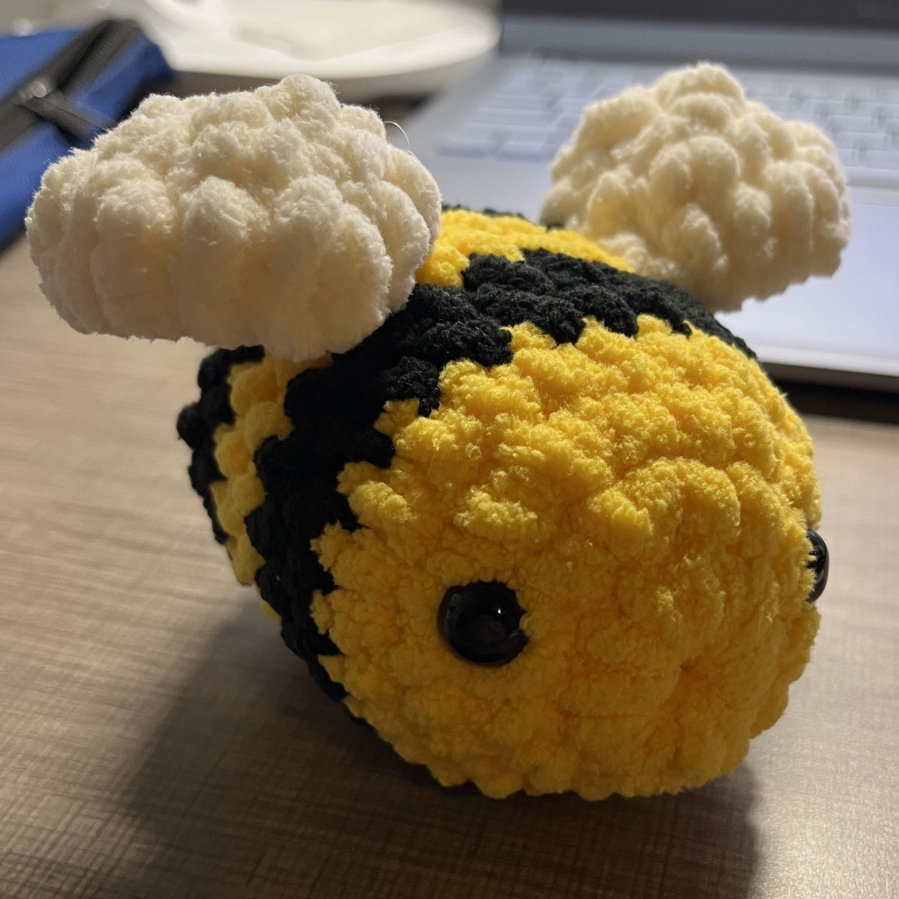
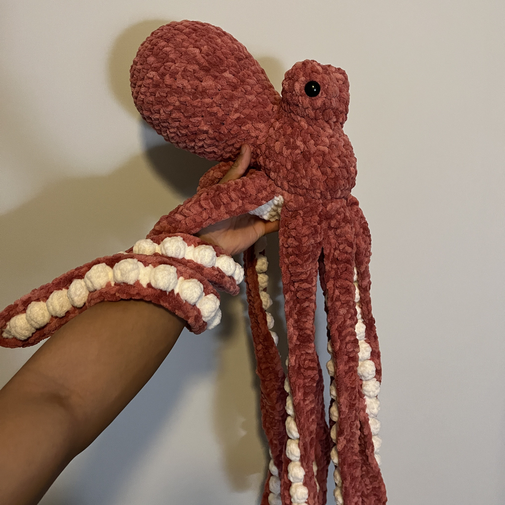

back to home
code
Projects:
- Diffuse: A presentation tool to help share links and content to the audience, made with Firebase.
- Ranking Chart: A score tracker for the game Puzzle & Dragons, made with Firebase and Chart.js.
- TsubakiBot: A Red (Python) Discord bot related to the game Puzzle & Dragons. I have contributed to various cogs and created a few cogs including Padle, Score
listener, and Twitter listener. Future contributes are private however.
- Pinanle: A Heardle clone for classical piano pieces, made with React (no longer maintained).
- Jordle: A Wordle clone made with JavaFX.
- House o' Flavor: A recreation of the game Overcooked, made with Java AWT.
Tools & scripts:
- Handle
Reduction: A program to perform the handle reduction algorithm on (mathematical) braids, written in Java.
- puzz.link Stats: A website and script to check your stats on the logic puzzle database, puzz.link.
- Anagrams: Quickly detect if two strings are anagrams.
- Cut Into Parts: Cut a YouTube video into segmented MP3 parts.
- Hatify: Place a hat on an image (i.e. for profile pictures).
piano
I am a classically trained pianist and have been playing for years. My favorite composer is Franz Liszt, and here are some of my favorite pieces that I've played:
Here are some of my favorite Piano Concertos:
- Bortkiewicz Piano Concerto No. 1 - underrated!
- Mowszkowski Piano Concerto No. 2
- Rachmaninoff Piano Concerto No. 3 - specifically played by Yunchan
Lim.
- Scriabin Piano Concerto - specifically played by Daniil Trifinov.
- Ravel Piano Concerto in G Major
- Tchaikovsky Piano Concerto No. 1
And here are the pieces that I'm currently working on:
- Rachmaninoff - Prelude in G minor, Op. 23, No. 5
juggling
I first learned how to juggle with the Georgia Tech Juggling Club in September 2022, and I was the GT Juggling Club president from January 2024-January 2025. I am now mainly working on 5 balls and 4 ball Mills' Mess, as well as some other
fun tricks with clubs.
ambigrams
Ambigrams are designs of words that can be read in different directions (sometimes with different meanings with different perspectives). Here a few that I've designed.
crochet





